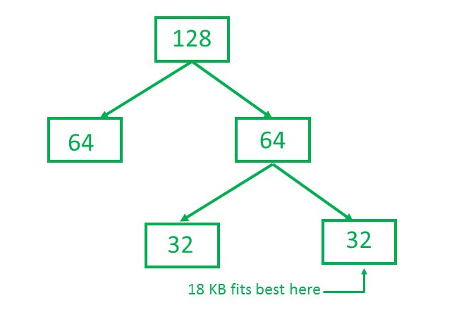

Prerequisite – Partition Allocation Methods
Static partition schemes suffer from the limitation of having the fixed number of active processes and the usage of space may also not be optimal. The buddy system is a memory allocation and management algorithm that manages memory in power of two increments. Assume the memory size is 2U, suppose a size of S is required.
- If 2U-1<S<=2U: Allocate the whole block
- Else: Recursively divide the block equally and test the condition at each time, when it satisfies, alloacate the block and get out the loop.
System also keep the record of all the unallocated blocks each and can merge these different size blocks to make one big chunk.
Advantage –
- Easy to implement a buddy system
- Allocates block of correct size
- It is easy to merge adjacent holes
- Fast to allocate memory and de-allocating memory
Disadvantage –
- It requires all allocation unit to be powers of two
- It leads to internal fragmentation
Example –
Consider a system having buddy system with physical address space 128 KB.Calculate the size of partition for 18 KB process.
Solution –

So, size of partition for 18 KB process = 32 KB. It divides by 2, till possible to get minimum block to fit 18 KB.